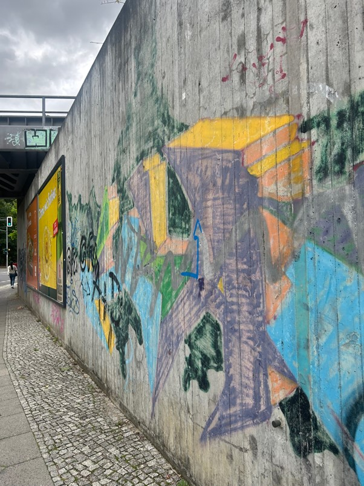
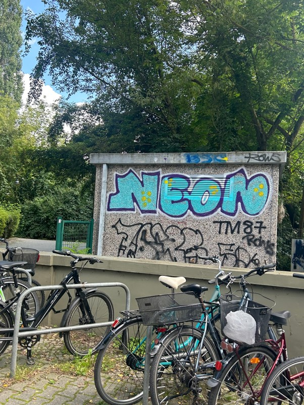
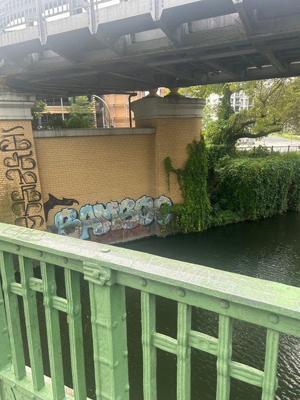
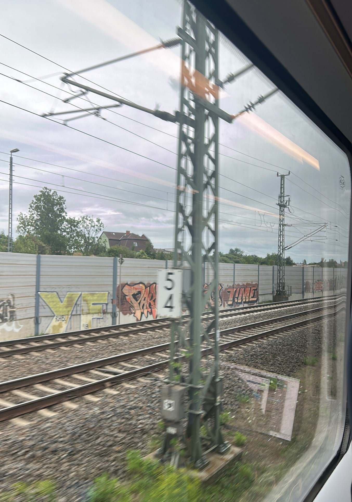
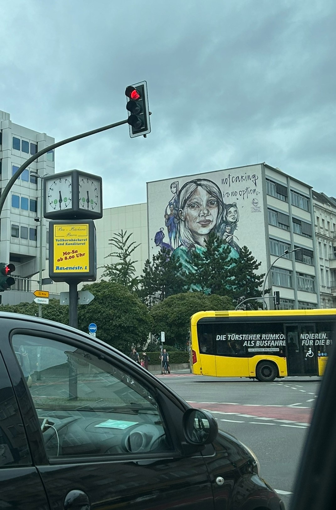
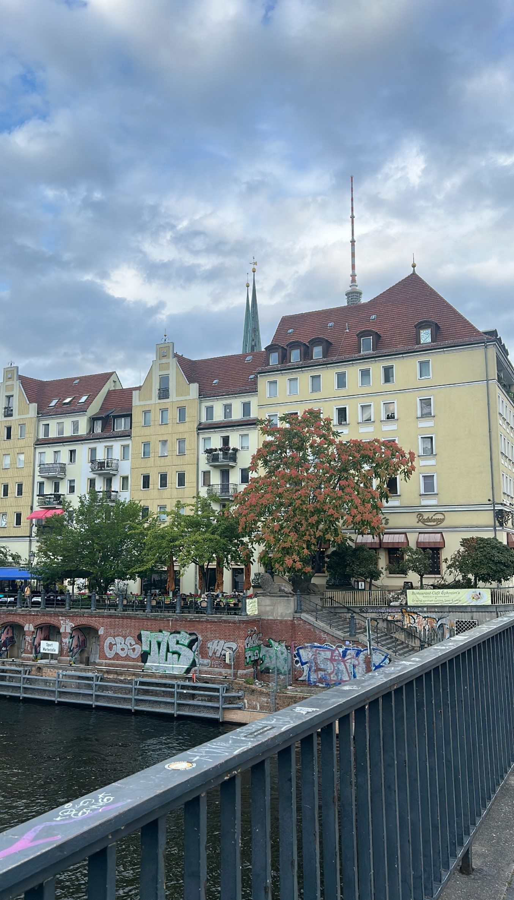

가끔 길을 지나가다 보면 알록달록한 글씨와 그림으로 꾸며진 벽, 다리, 건물 등을 볼 수 있죠.
여러분은 ‘그래피티’에 대해서 알고 계신가요? 그래피티란, 벽이나 건물에 낙서처럼 ‘긁거나’ 에어스프레이를 이용해 그리는 그림 등을 말해요.
‘긁어서 새기다’라는 뜻의 이탈리아어 graffito 와 그리스어 sgraffito에서 기원한 그래피티는 낙서의 수준을 넘어서 예술로 평가받기도 해요.
오늘 제가 설명할 것은 바로~ 베를린의 그래피티에요.
그러니까 어느 날, 제가 길을 걷고 있었는데요.

큰 벽면을 다 뒤덮은 그래피티가 보이시나요?
뿐만이 아니라

여기에도,

다리 밑에도,
 기차역에도
기차역에도

S-Bahn 을 타고 이동하는 풍경에도
베를린의 곳곳에서 그래피티를 만나볼 수 있었습니다!
네, 맞습니다. 베를린은 세계에서 그래피티로 유명한 도시 중 하나인데요!
그래서인지 어딜가나 그래피티를 볼 수 있습니다.
현재 수많은 그래피티 아티스트들이 베를린에서 활동하고 있으며,
그래피티 전용 잡지 사이트도 있습니다.

무려 건물 하나를 다 덮은 그래피티까지, 그 규모가 다양합니다.
베를린에 있었을 때 그래피티를 찍으려고 찍은 사진들이 아닌데도 불구하고 사진들이 꽤 있네요.
그만큼 정말 어딜가도 그래피티가 있다는 뜻이겠죠?
그렇다면, 베를린에 그래피티가 이렇게나 많은 이유는 무엇일까요?
베를린 장벽이 무너진 후에, 여러 기업들이 독일 곳곳으로 빠져나가고 인구가 감소했어요.
서베를린에서는 이를 회복하기 위해 각종 유흥의 규제를 대폭 완화했고,
베를린은 자연스레 예술가들이 모여드는 도시가 되었어요.
그래피티로 자유로운 낙서를 하고 그림을 그리기 시작했죠.
이제는 베를린을 대표하는 명물이 된 그래피티이지만,
주의해야 할 것은 베를린에서 그래피티는 ‘불법’이라는 사실입니다.
2005년 9월부터 벽의 주인에게 허락을 구하지 않은 그래피티는 모두 불법입니다.
최고 2000유로의 벌금과 3년 이하의 징역까지도 처벌이 가능하다고 하니 결코 약한 수위가 아니겠죠..
하지만, 그럼에도 불구하고 아직까지도 베를린 어딜가나 그래피티를 볼 수 있는 이유는!
바로 2006년 베를린이 유네스코에 ‘City of Design’ 으로 선정됐기 때문입니다.
그래피티를 정말 불법 취급하기에는 베를린의 그래피티가 전세계적으로 유명세를 얻고,
베를린에서 하나의 관광상품이 되어버린 것이죠.
그래서 실질적으로 주 정부는 현재 그래피티를 눈 감아 주고 있는 상태라고 볼 수 있겠습니다. ^_^

알록달록 힙한 그래피티가 유럽풍 건물과 함께 있는 모습이 어딘가 모순적이기도 하면서 잘 어우러지기도 한다는 생각이 들었습니다.
 이렇게 귀여운 그래피티도 있네요 ^_^
이렇게 귀여운 그래피티도 있네요 ^_^
나중에 베를린을 방문하신다면 도시 곳곳의
그래피티를 꼭 즐겨보시길 바랍니다.
감사합니다!